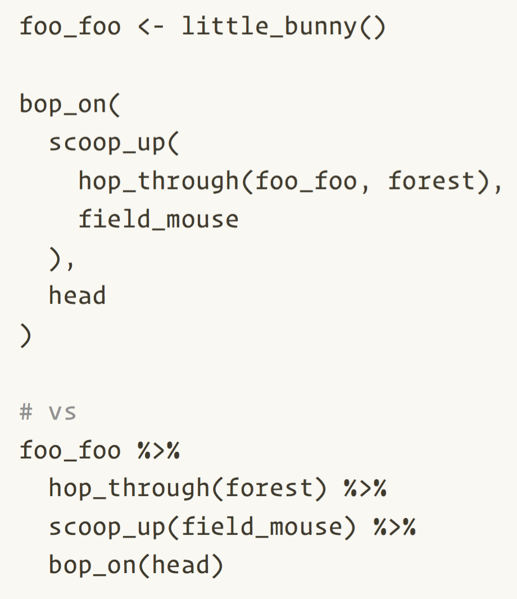
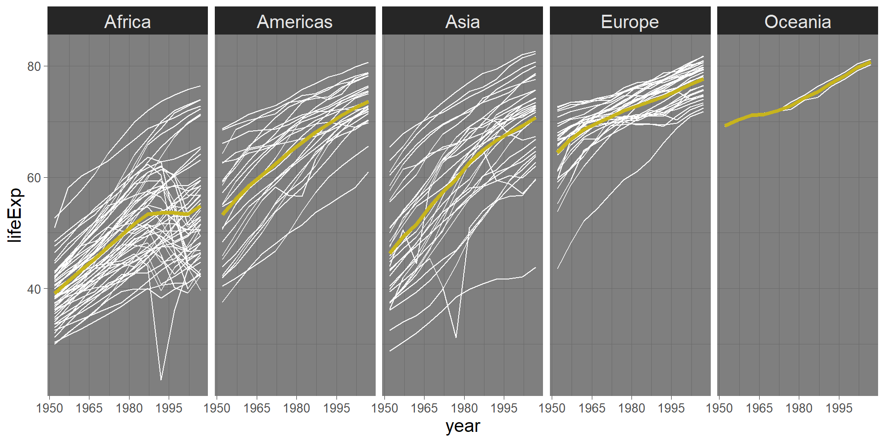
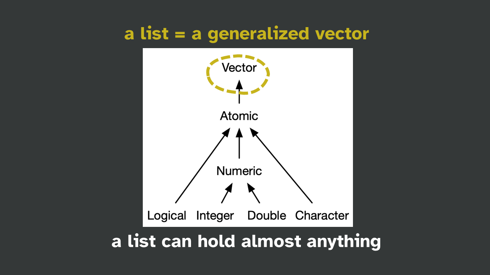
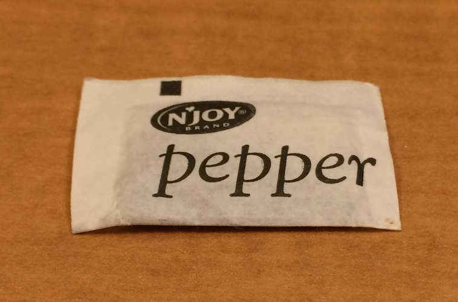

Iterating well with purrr
Shannon Pileggi
Introduction
Shannon Pileggi
Acknowledgements
Workshop materials have been adapted from the 2020 RStudio What They Forgot To Teach You About R Workshop.
This work is licensed under a Creative Commons Attribution-ShareAlike 4.0 International License (CC BY-SA4.0).
Checklist
R installed? Pretty recent?
Current version 4.2.0
RStudio installed?
I’m on build 485
Have these packages?
tidyverse (includes purrr); repurrrsive
Additional resources
Jenny Bryan purrr tutorial
https://jennybc.github.io/purrr-tutorial/Charlotte Wickham purrr tutorial
https://github.com/cwickham/purrr-tutorialJenny Bryan row-oriented workflows workshop
https://github.com/jennybc/row-oriented-workflowsAdvanced R by Hadley Wickham, Ch 9 Functionals
https://adv-r.hadley.nz/functionals.htmlThe Joy of Functional Programming (for Data Science)
webinar by Hadley Wickham
https://www.youtube.com/watch?v=bzUmK0Y07ck
Syntax aside
Pipes
2021+ (R \(\geq\) 4.1.0) native R pipe
|>2014+ magrittr pipe
%>%
2022 Isabella Velásquez Understanding the native R pipe |> https://ivelasq.rbind.io/blog/understanding-the-r-pipe/
R for Data Science: Ch 18 Pipes
Namespacing
dplyr::select()
tells R explicitly to use the function
selectfrom the packagedplyrcan help to avoid name conflicts (e.g.,
MASS::select())does not require
library(dplyr)
Iterating without purrr
Gapminder example
# A tibble: 1,704 × 6
country continent year lifeExp pop gdpPercap
<fct> <fct> <int> <dbl> <int> <dbl>
1 Afghanistan Asia 1952 28.8 8425333 779.
2 Afghanistan Asia 1957 30.3 9240934 821.
3 Afghanistan Asia 1962 32.0 10267083 853.
4 Afghanistan Asia 1967 34.0 11537966 836.
5 Afghanistan Asia 1972 36.1 13079460 740.
6 Afghanistan Asia 1977 38.4 14880372 786.
7 Afghanistan Asia 1982 39.9 12881816 978.
8 Afghanistan Asia 1987 40.8 13867957 852.
9 Afghanistan Asia 1992 41.7 16317921 649.
10 Afghanistan Asia 1997 41.8 22227415 635.
# … with 1,694 more rowsHans Rosling discusses Gapminder data
https://www.youtube.com/watch?v=hVimVzgtD6w
Gapminder life expectancy
What am I doing? Are there mistakes?
africa <- gapminder[gapminder$continent == "Africa", ]
africa_mm <- max(africa$lifeExp) - min(africa$lifeExp)
americas <- gapminder[gapminder$continent == "Americas", ]
americas_mm <- max(americas$lifeExp) - min(americas$lifeExp)
asia <- gapminder[gapminder$continent == "Asia", ]
asia_mm <- max(asia$lifeExp) - min(africa$lifeExp)
europe <- gapminder[gapminder$continent == "Europe", ]
europe_mm <- max(europe$lifeExp) - min(europe$lifeExp)
oceania <- gapminder[gapminder$continent == "Oceania", ]
oceania_mm <- max(europe$lifeExp) - min(oceania$lifeExp)
cbind(
continent = c("Africa", "Asias", "Europe", "Oceania"),
max_minus_min = c(africa_mm, americas_mm, asia_mm, europe_mm, oceania_mm)
)01:00
Discussion
What are the drawbacks of this code?
How would you do it instead?
01:00
An alternative solution
group_by approach
# A tibble: 5 × 2
continent max_minus_min
<fct> <dbl>
1 Africa 52.8
2 Americas 43.1
3 Asia 53.8
4 Europe 38.2
5 Oceania 12.1previous approach
continent max_minus_min
[1,] "Africa" "52.843"
[2,] "Asias" "43.074"
[3,] "Europe" "59.004"
[4,] "Oceania" "38.172"
[5,] "Africa" "12.637" More iteration
[1] "The 2017 RStudio Conference was in Orlando."
[2] "The 2018 RStudio Conference was in San Diego."
[3] "The 2019 RStudio Conference was in Austin."
[4] "The 2020 RStudio Conference was in San Francisco."
[5] "The 2021 RStudio Conference was in remote." Can you think of other ways to do this?
00:30
More iteration, cont.
[1] "The 2017 RStudio Conference was in Orlando."
[2] "The 2018 RStudio Conference was in San Diego."
[3] "The 2019 RStudio Conference was in Austin."
[4] "The 2020 RStudio Conference was in San Francisco."
[5] "The 2021 RStudio Conference was in remote." The 2017 RStudio Conference was in Orlando.
The 2018 RStudio Conference was in San Diego.
The 2019 RStudio Conference was in Austin.
The 2020 RStudio Conference was in San Francisco.
The 2021 RStudio Conference was in remote.Some R functions are vectorized.
Introducing purrr
But what if you really need to iterate?
purrr
purrrenhances R’s functional programming toolkita “core” package in the tidyverse meta-package
purrr vs apply
purrr is an alternative to “apply” functions
purrr::map()≈base::lapply()
Data
got_chars

sw_people, sw_species, etc.
Get comfortable with lists
Working with lists
{kind=link}
Live coding
How many elements are in
got_chars?Who is the 9th person listed in
got_chars? What information is given for this person?What is the difference between
got_chars[9]andgot_chars[[9]]?
List exploration
Subsetting lists


[ returns a smaller list; [[ returns contents in the list
Another list analogy
x

x[i]

x[[i]]

Iterating with purrr
purrr::map(.x, .f, ...)
for every element of .x do .f
.x = minis
map(minis, antennate)
for every element of .x do .f

Advanced R: Ch. 9 Functionals
purrr::map(.x, .f, ...)
purrr::map() is a nice way to write a for loop.
Someone has to write a for loop. It doesn’t have to be you.
~ Jenny Bryan
Workflow demonstration
How many aliases does each GoT character have?
map(got_chars, .f = 🤷)
Workflow:
- Do it for one element.
- Find the general recipe.
- Drop into
map()to do for all.
1. Do it for one element
$url
[1] "https://www.anapioficeandfire.com/api/characters/1303"
$id
[1] 1303
$name
[1] "Daenerys Targaryen"
$gender
[1] "Female"
$culture
[1] "Valyrian"
$born
[1] "In 284 AC, at Dragonstone"
$died
[1] ""
$alive
[1] TRUE
$titles
[1] "Queen of the Andals and the Rhoynar and the First Men, Lord of the Seven Kingdoms"
[2] "Khaleesi of the Great Grass Sea"
[3] "Breaker of Shackles/Chains"
[4] "Queen of Meereen"
[5] "Princess of Dragonstone"
$aliases
[1] "Dany" "Daenerys Stormborn"
[3] "The Unburnt" "Mother of Dragons"
[5] "Mother" "Mhysa"
[7] "The Silver Queen" "Silver Lady"
[9] "Dragonmother" "The Dragon Queen"
[11] "The Mad King's daughter"
$father
[1] ""
$mother
[1] ""
$spouse
[1] "https://www.anapioficeandfire.com/api/characters/1346"
$allegiances
[1] "House Targaryen of King's Landing"
$books
[1] "A Feast for Crows"
$povBooks
[1] "A Game of Thrones" "A Clash of Kings" "A Storm of Swords"
[4] "A Dance with Dragons"
$tvSeries
[1] "Season 1" "Season 2" "Season 3" "Season 4" "Season 5" "Season 6"
$playedBy
[1] "Emilia Clarke"1. Do it for one element
[1] "Dany" "Daenerys Stormborn"
[3] "The Unburnt" "Mother of Dragons"
[5] "Mother" "Mhysa"
[7] "The Silver Queen" "Silver Lady"
[9] "Dragonmother" "The Dragon Queen"
[11] "The Mad King's daughter"1. Do it for one element, again
2. Find the general recipe.
.x <- got_chars[[?]]
length(.x[["aliases"]])
.xis a pronoun, like “it”.xmeans “the current element”
3. Drop into map() to do for all.
.x <- got_chars[[?]]
length(.x[["aliases"]])
[[1]]
[1] 4
[[2]]
[1] 11
[[3]]
[1] 1
[[4]]
[1] 1
[[5]]
[1] 1
[[6]]
[1] 1
[[7]]
[1] 1
[[8]]
[1] 1
[[9]]
[1] 11
[[10]]
[1] 5
[[11]]
[1] 16
[[12]]
[1] 1
[[13]]
[1] 2
[[14]]
[1] 5
[[15]]
[1] 3
[[16]]
[1] 3
[[17]]
[1] 3
[[18]]
[1] 5
[[19]]
[1] 0
[[20]]
[1] 3
[[21]]
[1] 4
[[22]]
[1] 1
[[23]]
[1] 8
[[24]]
[1] 2
[[25]]
[1] 1
[[26]]
[1] 5
[[27]]
[1] 1
[[28]]
[1] 4
[[29]]
[1] 7
[[30]]
[1] 3Anonymous functions
~ is shortcut for anonymous functions supported in purrr
Three ways of specifying anonymous functions:
Your turn
How many ___ does each character have?
| Characters | Items |
|---|---|
| got_chars | titles, allegiances |
| sw_people | vehicles, starships |
map(got_chars, ~ length(.x[["aliases"]]))
05:00
Type specific map variants
[1] 4 11 1 1 1 1 1 1 11 5 16 1 2 5 3 3 3 5 0 3 4 1 8 2 1
[26] 5 1 4 7 3map_lgl()
map_int()
map_dbl()
map_chr()
returns an atomic vector
of the specified type
Your turn
Replace map() with type-specific map().
# What's each character's name?
map(got_chars, ~.x[["name"]])
map(sw_people, ~.x[["name"]])
# What color is each SW character's hair?
map(sw_people, ~ .x[["hair_color"]])
# Is the GoT character alive?
map(got_chars, ~ .x[["alive"]])
# Is the SW character female?
map(sw_people, ~ .x[["gender"]] == "female")
# How heavy is each SW character?
map(sw_people, ~ .x[["mass"]])03:00
More purrr
Review
Lists can be awkward
Lists can be necessary
Get to know your list
Review, cont.
for every element of .x do .f
We extract by name a lot
.f specification & shortcuts
.x = minis
map(minis, “pants”)
Your turn
Explore a GoT or SW list and find a new element to look at.
Extract it across the whole list with name and position shortcuts for .f.
Use map_TYPE() to get an an atomic vector as output.
05:00
Common problem
I’m using map_TYPE() but some
individual elements aren’t of length 1.
They are absent or have length > 1.
Solutions
Missing elements?
Specify a .default value.
Elements of length > 1?
You can’t make an atomic vector.*
Get happy with a list or list-column.
Or pick one element, e.g., the first.
* You can, if you are willing to flatten() or squash().
.default value
[[1]]
[1] NA
[[2]]
[1] NA
[[3]]
[1] NA
[[4]]
[1] NA
[[5]]
[1] "http://swapi.co/api/people/1/" "http://swapi.co/api/people/18/"
[[6]]
[1] NA
[[7]]
[1] NA
[[8]]
[1] "http://swapi.co/api/people/13/"
[[9]]
[1] NA
[[10]]
[1] NA
[[11]]
[1] NA
[[12]]
[1] NA
[[13]]
[1] "http://swapi.co/api/people/1/" "http://swapi.co/api/people/5/"
[[14]]
[1] NA
[[15]]
[1] NA
[[16]]
[1] NA
[[17]]
[1] NA
[[18]]
[1] NA
[[19]]
[1] "http://swapi.co/api/people/10/" "http://swapi.co/api/people/32/"
[[20]]
[1] "http://swapi.co/api/people/44/"
[[21]]
[1] "http://swapi.co/api/people/11/"
[[22]]
[1] "http://swapi.co/api/people/70/"
[[23]]
[1] "http://swapi.co/api/people/11/"
[[24]]
[1] NA
[[25]]
[1] NA
[[26]]
[1] "http://swapi.co/api/people/79/"
[[27]]
[1] NA
[[28]]
[1] NA
[[29]]
[1] NA
[[30]]
[1] NA
[[31]]
[1] NA
[[32]]
[1] NA
[[33]]
[1] NA
[[34]]
[1] NA
[[35]]
[1] NA
[[36]]
[1] NA
[[37]]
[1] "http://swapi.co/api/people/67/"
[[38]]
[1] NA
[[39]]
[1] NAselect first element
[1] NA NA
[3] NA NA
[5] "http://swapi.co/api/people/1/" NA
[7] NA "http://swapi.co/api/people/13/"
[9] NA NA
[11] NA NA
[13] "http://swapi.co/api/people/1/" NA
[15] NA NA
[17] NA NA
[19] "http://swapi.co/api/people/10/" "http://swapi.co/api/people/44/"
[21] "http://swapi.co/api/people/11/" "http://swapi.co/api/people/70/"
[23] "http://swapi.co/api/people/11/" NA
[25] NA "http://swapi.co/api/people/79/"
[27] NA NA
[29] NA NA
[31] NA NA
[33] NA NA
[35] NA NA
[37] "http://swapi.co/api/people/67/" NA
[39] NA more .f shortcuts
.f accepts
vector of positions
list of names and positions